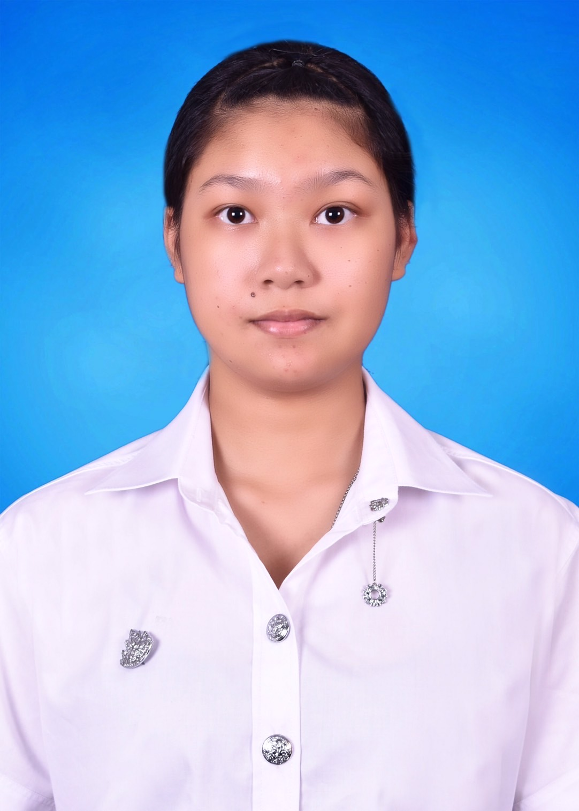

About Me

My name is Peerada sonong
ชื่อ นางสาวพีรดา สนองค์ เกิดวันที่ 14 พฤษภาคม พ.ศ.2546 อายุ 21 ปี สัญชาติ:ไทย ศาสนา:พุทธ กรุ๊ปเลือด:B
ที่อยู่ 42/8 ซอย:ทวีวัฒนา5 ตำบล:ทวีวัฒนา เขต:ทวีวัฒนา จังหวัด:กรุงเทพมหานคร รหัสไปรษณีย์:10170
ข้อดี-ข้อเสีย
ข้อดี: มีความเป็นระเบียบหรือเป็นพวกperfectionist สามารถปรับตัวให้เข้ากับสถานการณ์หรือสถานที่นั้นได้ มีเหตุผล ชอบวางแผน
ข้อเสีย: เรียนรู้ได้ค่อนข้างช้า ตามไม่ค่อยทัน แสดงออกไม่เก่ง